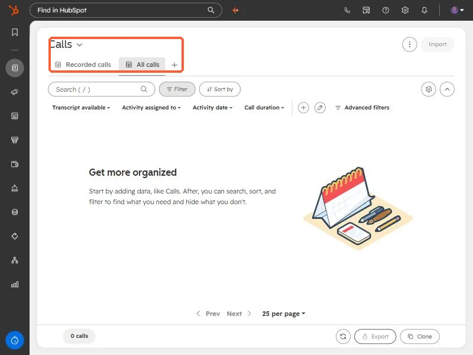
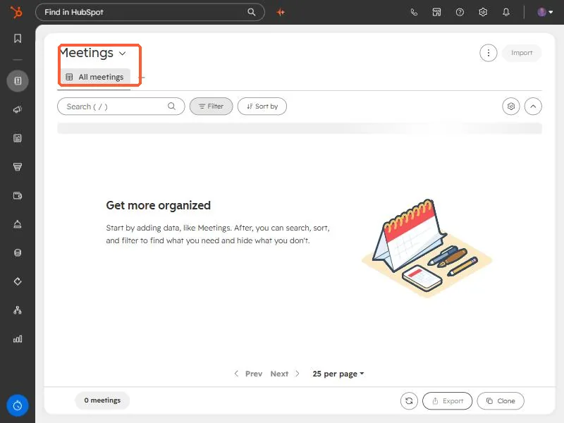

Short answer
HubSpot names every object by an ID in URLs and in the API: contacts 0-1, companies 0-2, deals 0-3, tickets 0-5, meetings 0-47, calls 0-48, notes 0-46, tasks 0-27, emails 0-49. Swap the ID in an index URL to open that object's list. Mix them up and you get the wrong page: a meeting link built with the call ID opened a blank call.
1. The IDs you will actually use
These are from HubSpot's developer documentation. Custom objects use 2- followed by a number.
- Contacts
0-1, Companies0-2, Deals0-3, Tickets0-5 - Products
0-7, Line items0-8, Quotes0-14 - Tasks
0-27, Notes0-46, Meetings0-47, Calls0-48, Emails0-49 - Communications
0-18, Leads0-136, Users0-115
2. Open any object's index page
The pattern for an object's list is the contacts URL with the ID swapped in. Replace PORTAL with your portal ID, or use the link builder:
https://app.hubspot.com/contacts/PORTAL/objects/0-48/views/all/list calls
https://app.hubspot.com/contacts/PORTAL/objects/0-47/views/all/list meetingsWith the calls ID the page is titled Calls and has recorded-call and transcript filters.


With the meetings ID the same pattern opens Meetings.


3. The mistake that cost me a link
I once built a review link for a meeting recording using the call ID. HubSpot redirected to a review page for object type 0-48, which is calls, and the page loaded as a blank call because the record was a meeting (0-47). Fixing the ID in the URL got the right page.
The second lesson: not every object has a standalone record page. A direct record link I built for the meeting returned a 404. The record existed, but I had to reach it from an associated contact or from the meetings index instead. If a link 404s, check the object ID first, then try the index page.
4. The same IDs work in the API
The generic object endpoints take the ID as objectTypeId, so one script can handle several objects.
GET /crm/v3/objects/0-47?limit=10 meetings
GET /crm/v3/objects/0-48?limit=10 callsUse names such as contacts where a path accepts them, and numeric IDs where it does not.